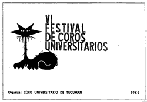
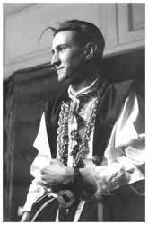

Los años del coro
El Coro de Ingeniería
El 14 de septiembre de 1958 hizo su primer ensayo el Coro de la Facultad de Ingeniería de la Universidad de Buenos Aires. Su primer concierto oficial, en el cual participó Gerardo, fue el 13 de abril de 1959.

La dirección del coro estuvo a cargo del reconocido maestro Virtú Maragno.
Los ensayos se realizaban en un aula del imponente edificio gótico de la sede de la facultad de Ingeniería, ubicada en las Heras y Azcuénaga, en el barrio porteño de Recoleta. Al principio eran unos veinte coreutas, pero con el transcurso del tiempo llegaron a ser más de ochenta.
 Se ensayaba dos veces por semana: los jueves por la noche, de 9 a
11, y los sábados por la tarde. Era común que tras los
ensayos los coreutas se reunieran en el bar ubicado frente a la facultad,
donde solían discutir con los encargados porque no los dejaban
cantar.
Se ensayaba dos veces por semana: los jueves por la noche, de 9 a
11, y los sábados por la tarde. Era común que tras los
ensayos los coreutas se reunieran en el bar ubicado frente a la facultad,
donde solían discutir con los encargados porque no los dejaban
cantar.
El coro de Ingeniería estaba abierto a estudiantes de otras facultades. De hecho, de los coreutas que allí se conocieron y que luego terminaron integrando Les Luthiers, sólo Marcos Mundstock era estudiante de Ingeniería. Masana estudiaba Arquitectura, Jorge Maronna Medicina, Daniel Rabinovich Derecho y Carlos Núñez Cortés Química Biológica.
El luthier Carlos Núñez Cortés conserva un vívido recuerdo de aquellos años:
 “Era un grupo hermoso. Por aquella época, yo era adolescente,
estaba cursando losprimeros años de la facultad. Y de pronto
me encontré con un grupo de gente que en lugar de ir a bailar
los sábados a la noche, andar en moto o tomar cerveza, prefería
reunirse en una casa a hacer música. Algunos cantaban, otros
sabían tocar el violín, o el cello, o la flauta traversa...
algunos llevábamos partituras del Renacimiento... se formaban
grupitos de cámara...se leían textos y se comentaban.
Otros, en la cocina preparaban vermicelli al óleo para
comer después entre todos. Era un caldo de cultivo tan lindo...
uno se sentía tan contenido que tenía ganas de estar
ahí y de no moverse. Por supuesto, me metí hasta el alma.”
“Era un grupo hermoso. Por aquella época, yo era adolescente,
estaba cursando losprimeros años de la facultad. Y de pronto
me encontré con un grupo de gente que en lugar de ir a bailar
los sábados a la noche, andar en moto o tomar cerveza, prefería
reunirse en una casa a hacer música. Algunos cantaban, otros
sabían tocar el violín, o el cello, o la flauta traversa...
algunos llevábamos partituras del Renacimiento... se formaban
grupitos de cámara...se leían textos y se comentaban.
Otros, en la cocina preparaban vermicelli al óleo para
comer después entre todos. Era un caldo de cultivo tan lindo...
uno se sentía tan contenido que tenía ganas de estar
ahí y de no moverse. Por supuesto, me metí hasta el alma.”
El primer grupo musical conformado por integrantes del coro como actividad paralela fue conocido como Los Triste España Serenaders. Este grupo, creado en 1960, no llegó a constituirse con integrantes fijos; era simplemente el nombre con el que distintos miembros del coro se reunían a tocar canciones de jazz y otros géneros.Tenían algunos instrumentos no convencionales, entre ellos el serrucho, que interpretaba Horacio López, por aquel entonces, muy amigo de Gerardo.
Los festivales corales
 Los coros de la UBA buscaron deliberadamente relacionarse con loscoros de otras universidades nacionales, lo que dio origen al movimiento coral universitario y sus festivales anuales, que representaron un verdadero hito en la historia del movimiento coral argentino. La sede de estos festivales, que tuvieron lugar anualmente entre 1959 y 1966, cambiaba de ciudad todos los años.
La universidad que lo organizaba se encargaba de conseguir las salas de concierto, imprimir los programas y procurar alojamiento y comida para los coros visitantes. Las facultades colaboraban económicamente con una parte de los pasajes de los estudiantes. Los coros visitantes reunían el resto del dinero a través de rifas, bonos contribución y publicidades en los programas de sus conciertos.
Durante la semana del festival, los coros participantes brindaban conciertos compartidos entre dos o tres agrupaciones. El momento más intenso era el concierto de clausura, en el cual todos los coros cantaban juntos algunas obras preparadas especialmente para la masa coral final, integrada a veces por 500 o 600 participantes.
Il figlio del pirata
Cuenta la leyenda que un día, a comienzos de 1963, Masana llegó al coro con un libreto y unas partituras bajo el brazo, una caja con pelucas y un sueño: poner en escena una opereta cómica llamada Il figlio del pirata.
 El argumento satirizaba varios lugares comunes de las tragedias operísticas. Era una historia de secretos familiares, intrigas y envenenamientos.
Il figlio del pirata forma parte de una obra mayor: I comici tronati, una “fantochada cómico-lírico-macarrónica en un acto y dos cuadros, en prosa y verso, estrenada con extraordinario éxito en el Teatro de Recoletos, Madrid, la noche del 14 de Julio de 1883”, según los pocos datos disponibles. La música era de Carlos Mangiagalli y el argumento del dramaturgo sevillano Rafael Leopoldo Palomino de Guzmán y de José de la Cuesta.
Pese a todas las complicaciones que traería poner en escena Il figlio del pirata, Masana asumió el desafío con naturalidad. El entusiasmo con el que comenzó a planificar la obra hizo que los demás lo siguieran sin vacilar. Se sumaron al elenco tres futuros integrantes de Les Luthiers: Marcos Mundstock, Daniel Rabinovich y Carlos Núñez Cortés.
La primera representación se hizo en el patio de la casa de Celia Lubenfeld, una de las cantantes del coro, y asistieron integrantes de varios otros coros. Aquella premiere hogareña fue todo un éxito. Los asistentes, fascinados, propusieron a los protagonistas representar Il figlio del pirata en el cierre del Festival de Coros Universitarios de 1963, que se realizaría ese mismo año en la ciudad bonaerense de Bahía Blanca. La costumbre marcaba que el último día de cada festival nacional los distintos coros preparaban algunas piezas humorísticas. Masana y los demás aceptaron gustosos.


Pero el destino quiso que aquella función nunca se representara. La noche anterior al cierre del festival, Patricia Jaimovich, la ínterprete femenina, sufrió un fuerte resfrío que la dejó sin voz.
Se decidió entonces presentar la obra en el festival coral del año siguiente.
El 5° Festival Argentino de Coros Universitarios comenzó el lunes 21 de septiembre de 1964, en la ciudad de La Plata, provincia de Buenos Aires. El sábado 26 de septiembre serealizó el cierre. Finalmente, Il figlio del pirata se estrenó, tras lo cual todos los participantes recibieron numerosas felicitaciones y muestras de reconocimientos.
La Cantata Modatón
Tras el éxito de Il figlio del pirata, el grupo liderado por Masana se planteó el desafío de realizar una nueva obra para el festival siguiente, que se realizaría en la ciudad de Tucumán.
No pasó mucho tiempo desde que volvieron triunfantes de La Plata hasta que Masana empezó a componer la canción que tenía en mente. Era una obra escrita al estilo de La pasión según San Mateo, de Johann Sebastian Bach. Musicalmente, la idea lo entusiasmaba, pero era demasiado solemne. Le faltaba la veta humorística.
Hasta que un día, se le ocurrió la idea de adaptar el texto del prospecto de un laxante, llamado Modatón, a la música que tenía en mente.
 Una vez que la letra y la música de la denominada Cantata
Modatón estuvieron terminadas, su autor firmó la
partitura como Johann Sebastian Masana y se la mostró a sus
compañeros.
Una vez que la letra y la música de la denominada Cantata
Modatón estuvieron terminadas, su autor firmó la
partitura como Johann Sebastian Masana y se la mostró a sus
compañeros.
A partir de allí, Masana inició el “reclutamiento” de los músicos que participarían. La Cantata Modatón estaba pensada para ser interpretada por instrumentos informales, es decir, construidos por ellos mismos.
Fue así como se sumó al grupo el futuro luthier Jorge Maronna, con sólo 16 años. Maronna se había mudado a Buenos Aires desde la ciudad de Bahía Blanca para estudiar medicina.
Luego de varias idas y venidas, la orquesta quedó conformada por los siguientes intérpretes e instrumentos: Carlos Núñez Cortés (tubófono cromático), Raúl Puig (manguelódica neumática; una melódica conectada a un par de globos que aportaban la corriente de aire necesaria para que el instrumento funcionara), Guillermo Marín (yerbomatófono d´ amore), Marcos Mundstock (gom-horn), Daniel Durán (cornetófono d´Amore),Jorge Maronna (contrachitarrone da gamba), Horacio López (serrucho, bautizado como ondas López) y el bass-pipe, a cargo de Masana.
El VI Festival de Coros Universitarios se realizó en el Teatro San Martín de la ciudad de Tucumán. La presentación de la Cantata Modatón generó una oleada de aplausos y ovaciones sin precedentes en ese tipo de festivales.
Tal fue la calidad de esa presentación, que algunos periodistas que habían asistido al festival, publicaron elogiosos comentarios al respecto. Uno de ellos les ofreció, inclusive, contactarlos con el dueño de un teatro de Buenos Aires, para que hagan un par de funciones.
© Copyright 2004, Sebastián Masana.